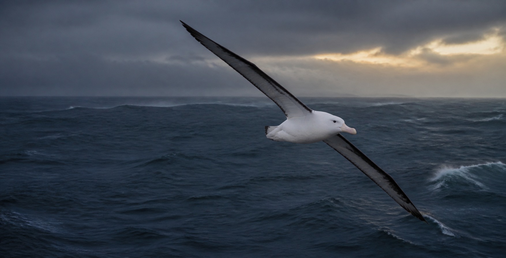

A complete field guide · Diomedeidae
Born to
cross oceans.
Meet every albatross species—from the storm lanes of the Southern Ocean to the volcanic islands of the North Pacific.
Explore all 22 species↓3.5 mlargest wingspan
of any living bird
of any living bird
22 LIVING SPECIES ◆ FOUR GENERA ◆ TWO OCEAN HEMISPHERES ◆ MASTERS OF DYNAMIC SOARING ◆
01 / INTRODUCTION
Masters of the
moving air.
Albatrosses spend most of their lives beyond sight of land, reading wind and wave with extraordinary precision.
Their long, narrow wings turn ocean winds into distance through dynamic soaring. Land is mainly for courtship, nesting, and raising a single chick.
02 / ALL SPECIES
THE COMPLETE FAMILY
Every species.
Every ocean.
Choose any adult bird photograph to see its name, scientific name, range, wingspan, and identification notes.
03 / A WORLD OF WIND
GLOBAL RANGE
Where the
wind leads.
Most albatross diversity circles the Southern Hemisphere. Three species specialize in the North Pacific, while the Waved Albatross breeds near the equator.
{kind=link}
04 / A SLOW LIFE
COURTSHIP TO OPEN OCEAN
One chick.
Years of devotion.
Dance
Young birds rehearse bows, calls, and bill-clapping before forming a pair.
One egg
Parents alternate incubation shifts while the other searches the ocean.
Raise
A chick remains at the colony for months while building reserves to fledge.
Roam
Juveniles can spend years at sea before returning to their birth region.